Lighting built for offices, rebuilt for homes
We had lighting software good enough to run an office tower. It could do almost anything, and almost nobody could work out how. My job was to turn it into an app you open on the way to bed, tap once, and put down.
The hard part was never adding things. It was deciding what to hide
- My role
- Lead designer
- Company
- Cooper Lighting Solutions
- Runs on
- iPhone and Android, plus a computer
- I did
- Everything, start to finish
- Team
- 15 people
- When
- 2020 to 2021
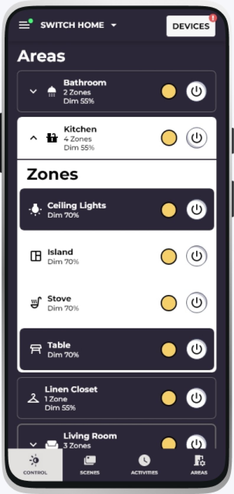
01 The job
From office ceilings to living rooms
The company sold lighting to offices, warehouses and hospitals, and that side of the business was doing fine. The question on the table was whether the same technology could be sold to ordinary people for their houses.
That is a much harder room to walk into. At work, somebody is paid to learn your software. At home, nobody is. If it annoys them, they delete it and buy a Philips Hue bulb instead.
So there were really two problems. Our software had been built for people who fit lighting for a living. It assumed you knew the words. It let you go as deep as you liked. It cared more about getting the setup perfect than getting you through it quickly. Meanwhile the apps we would be sitting beside on somebody’s phone were quick, smooth and forgiving.
We could not just copy our own product across and shrink it. The thinking behind it had to change. I ran that change from the first bit of research to handing the finished designs to the developers.
-
What I did
- All of the design, from first research to the finished screens
- Bought and used the rival apps, and wrote up where they fell short
- Worked out how the app should be organized and how it should behave
- Drew every screen, and built the kit of reusable pieces they came from
- Presented the work, usually to 25 or more people at a time
- Sat with the engineers and the product team every week
-
Who else was on it
- 4 engineering bosses
- 2 people running the build schedule
- 2 people deciding what we would build
- 2 people planning how the software fits together
- 3 developers writing the code
-
10 to 20
Times a day people open a lighting app
From smart home research
-
$48B
What home smart lighting was expected to be worth by 2027
The reason to go after it
-
3
Rival products I pulled apart in detail: Lutron, Hue and Google
How wide the research went
02 Research
What people actually wanted
An electrician will put up with a slow, fiddly app, because it is their job. Somebody at home will not. So before I drew a single screen I wanted to know two things: what people buying these lights actually care about, and where the apps they already own are letting them down.
-
Step one
I lived with the competition
Bought Lutron, Hue, Google Home and Amazon Alexa, set them all up properly and used them: the first hour, the everyday stuff, and the buried settings. Not a list of features. An honest go at each one.
-
Step two
I asked how people picture their own home
They think in rooms and in moods. The kitchen. The bedroom. Cosy, or bright enough to cook. Nobody thinks in gadgets, and absolutely nobody thinks about how those gadgets talk to each other. That single finding shaped the whole app.
-
Step three
I sorted through what we already had
Went through everything the office product could do and put each thing in one of three piles: keep it, say it in plain words, or drop it. A couple of things in the keep pile turned out to be our best cards.
-
Step four
I kept fifteen people pointing the same way
Every time we hit a checkpoint I showed the work to a room of 25 or more, from the engineers up to the bosses. It is slow. It is also the only way a team that size ends up building the same thing.
-
Step five
I wrote down three rules and stuck to them
Everything you touch answers straight away. Show the simple thing first, and keep the rest out of sight until somebody goes looking. And no technical words anywhere a normal person will see them.
The finding that set the bar
People open a lighting app 10 to 20 times a day. At that rate one extra tap is not a small annoyance. It is the reason they stop using it.
That number set the bar for everything after it. The screen you see every day had to be as close to no effort as we could get it, even if that meant hiding about four fifths of what the system can do until somebody actually goes looking for it.
03 The gap
Nobody was doing both halves well
Lining five products up side by side showed the opening. Lutron almost never dropped out, but it was expensive and would only talk to its own kit. Hue was a joy to set up, then ran out of things to do. The cheap ones were easy and unreliable.
Nobody had managed both halves: lights that stay connected across a whole house, in an app that everyone living there can use. That was the gap we could walk into.
| Product | Easy to set up | Stays connected | Changes through the day | More than one house | Account for the electrician | Works with other brands | Price |
|---|---|---|---|---|---|---|---|
| Lutron Caséta | So-so | Excellent | Barely | No | No | No, its own only | Expensive |
| Philips Hue | Excellent | Good | Good | No | No | Some brands | Mid to high |
| Google Home | Excellent | Drops out | Barely | Only a bit | No | Most brands | Cheap |
| Amazon Alexa | Good | Hit and miss | Barely | Only a bit | No | Most brands | Cheap |
| Control4 | Complicated | Excellent | Very good | No | No | No, its own only | Very expensive |
| This app This work | Made for it | Fixes itself | All day long | Yes | Yes, and it expires by itself | Yes, and you can tap a phone to a light | Expensive |
04 The look
Built to be read in the dark
I did not pick these colors because they look nice together. I picked them because of when this app gets used: at night, in a dim room, usually on the way to bed, often one-handed.
Every choice had to survive that. Can you read it with the lights already half down? Can you hit the button without looking properly? And can you tell what is going on without stopping to read anything?
- Words #1C1B1F
- Buttons and links #1C819D
- Screens you use daily #3D415E
- Second-line headings #B03060
- Setup screens #E8E8E8
- A light that is on #F0B040
- Found a new light #48F877
- Something is wrong #CB0000
-
Two backgrounds, so you always know where you are
Anything you use day to day sits on a dark blue-purple. Anything to do with setting things up sits on a light grey. You never have to read a heading to know which half of the app you are in. The background already told you.
Dark first also suits the hour. People open these apps after the sun goes down, dimming the lights for a film or setting a bedtime. A dark screen is kinder on your eyes, it does not light up the whole room, and it makes the warm glow of a lamp that is switched on jump out at you.
-
Four buttons along the bottom, always
Lights, Scenes, Schedules and Rooms sit at the bottom of every single screen. No back arrow to hunt for. No menu hidden behind three little lines. People use this one-handed, in the dark, halfway through doing something else, so the buttons had to be in the same spot every time.
Every row tells you three things at once, always in the same order: which room, how many sets of lights are in it, and how bright they are. Three sizes of text, and nothing else added.
-
4
Buttons along the bottom, on every screen
-
1
Tap from the front page to all the controls for any room
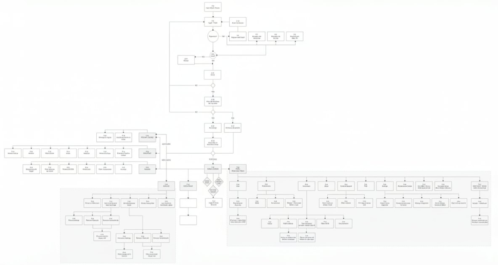
05 The everyday screen
The one they open twenty times a day
This is the screen the whole app gets judged on. My rule for it was fast enough that your thumb learns it. Everything you actually need, one tap away. Everything to do with setting up, nowhere to be seen until you go and look.
-
1
Tap to open a room and see all its lights, without leaving the page
-
2×
As many controls as the old design, one for the room and one for each set of lights in it
The call: open the room where it sits, not on a new screen
My first version did the obvious thing. Tap the kitchen, get a kitchen screen. Then we watched people use it, and they kept getting lost. Once they were inside the kitchen they had no idea what the rest of the house was doing. So now the room unfolds right where it sits. You can still see everything else, you can compare one room to another, and there is no back button to press.
The call: an on button at both levels
The thing people do most is turn a whole room off. That should never mean opening something first. So the room has its own on button, and every set of lights inside it has one too. Yes, it doubled the number of buttons on the page. It also turned about nine out of ten everyday jobs into a single tap.
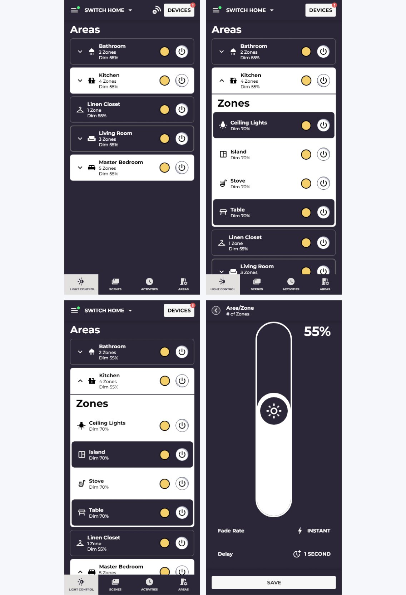
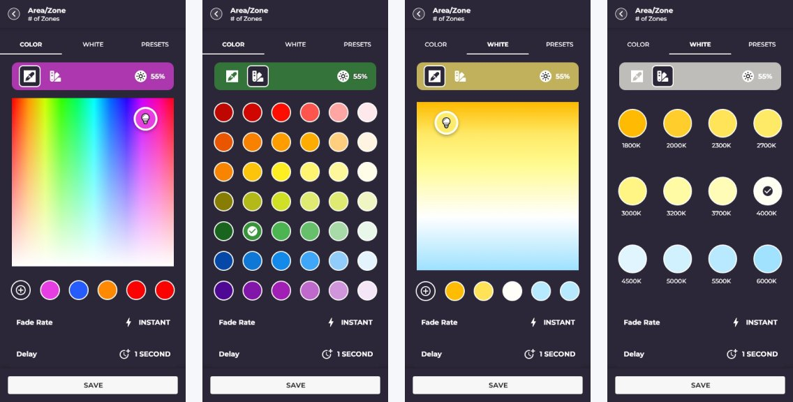
06 The invisible bit
Making the wiring disappear
This was the hardest thing on the whole project. Here is the problem in one go: the lights pass messages to each other, like a bucket chain. Some of them have to do the carrying. Pick the wrong ones and the lights at the far end of the house stop answering.
Choosing which lights do the carrying is normally a job for somebody who works in computer networks. We had to hand it to somebody who just bought a lamp.
The thing that cracked it: people do not need to understand how something works if they can read the picture. So my first go drew the whole thing as a map, using colors that need no explaining. Black meant a light doing the carrying. White meant one behaving itself. Red meant one causing trouble.
In a real house that is around 247 lights and gadgets, 66 of them carrying messages, sorted into 22 groups. Not a small ask.
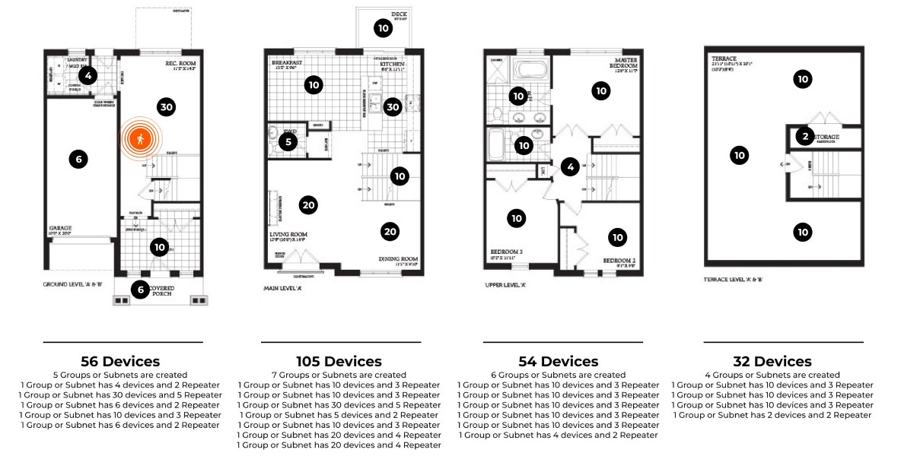
Four goes at it
My first three attempts all made the same mistake wearing different clothes. Each one made the picture prettier, and each one still handed the decision to the person holding the phone. The fourth one stopped asking.
| Attempt | How it worked | What it asked of you | What happened |
|---|---|---|---|
| 1. The web | A live web of every light, drag one onto the hub to promote it | A lot. Pick the right lights yourself | Dropped. Too frightening to look at |
| 2. Huddles | Bunch the lights up by how close they are to each other | Quite a bit. Decisions per bunch instead of per light | Dropped. Still showed the plumbing |
| 3. Your own groups | Let people build their own groups, by room or by job | Quite a bit. Still down to the single light | Dropped. Made setup take even longer |
| 4. Let it choose | The app picks the best lights to do the carrying | Nothing. One tap to say yes | Built it. The engineers backed it |
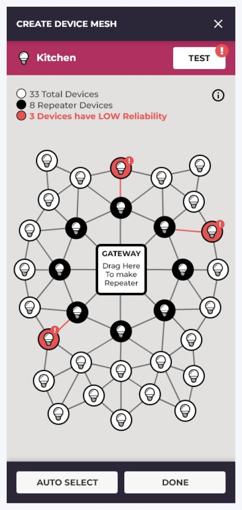
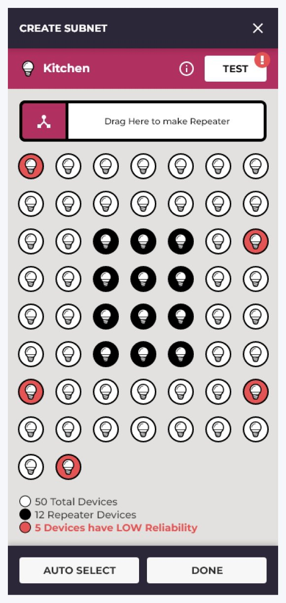
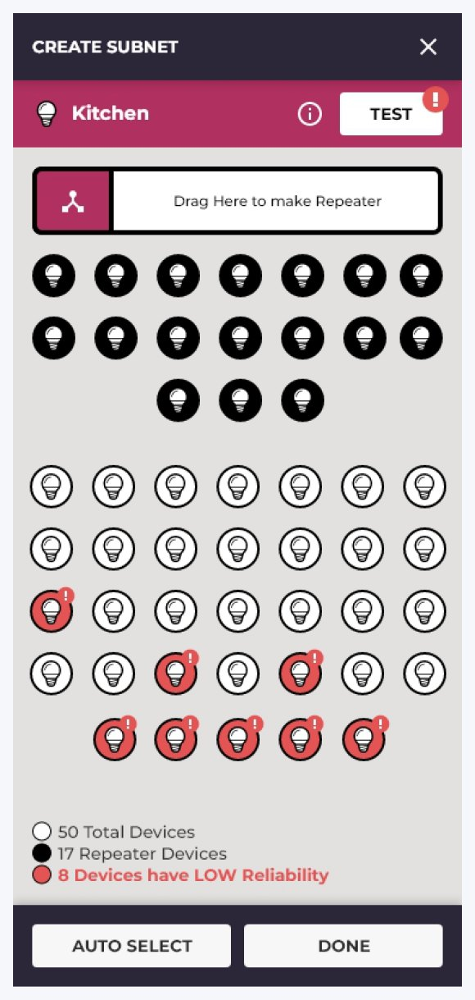
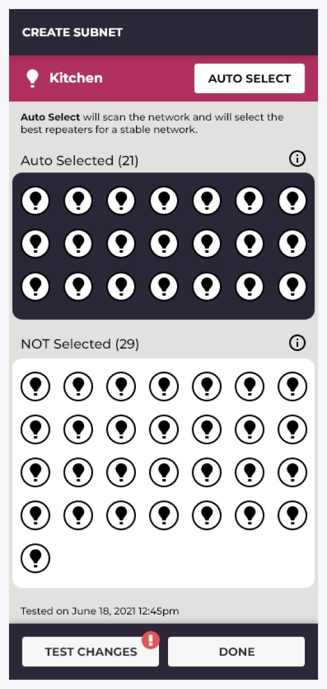
Why the fourth one was allowed to happen
I could not have designed my way to this on my own. It only became possible once the engineers said plainly that the app could pick better lights than a person would. The best design move here was to take the decision away completely, and that was their call to make possible, not mine.
07 Setting up
Set it up before it is on the wall

Every light has a little tag in it that your phone can read, the same way a card reader works. That meant you could set a light up before the electrician had fitted a single thing.
Scan it while it is still in the box. Say it goes in the living room. Give it a name. By the time anybody climbs a ladder, the whole house already exists in the app, and the electrician just has to screw things in.
-
3
Steps to add any light: scan it, check it, done
-
First
Nobody in home lighting was letting you set up before fitting at the time
There are three ways in, because electricians all work differently. Let the app go and find what is nearby. Type the number off the box. Or hold the phone up to the light. Whichever you choose, you land in the same name it, place it, confirm it steps, so nobody has to be taught three different things.
The call: make people name things there and then
Naming happens during setup, not in settings later. Here is why: in apps like this, almost nobody ever goes back to rename anything. Skip it once and you are living with “IRiS Color Bulb 1” for the next ten years. Making it a step you have to walk through meant far more lights ended up with names an actual human chose.
08 More than one home
For people with a second place
None of the cheaper rivals could handle more than one house from one account. We could. A cottage, a rental, a place you only visit in summer, each with its own settings, its own timings, and its own list of who is allowed to touch what.
This came straight out of the office product, where running several buildings from one login was completely ordinary. Carrying it over turned an old work feature into something none of the competition had.
-
3
Sizes to start from: up to 100 lights, 100 to 200, or up to 500
-
PRO
A temporary account for the electrician that switches itself off
Three kinds of account
-
The owner, who can do anything
Adding and removing lights, adding and removing people, timings, and every setting there is.
-
Everyone else in the house
Family, roommates, guests. They can turn the lights on and off and use whatever is already set up. They cannot change how any of it works, so nobody accidentally undoes your evening settings.
-
The electrician, who lets themselves out
Whoever fits the lights gets an account that expires on its own once the work is finished. Nobody has to remember to take their access away afterwards. This one came over from the office product almost untouched.
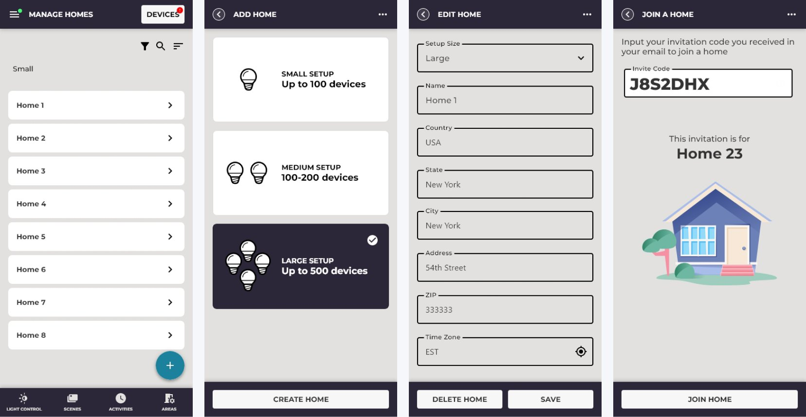
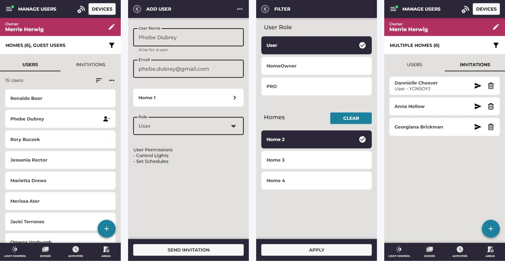
09 Timings
Lights that know when the sun goes down

This is where the app left the cheap competition behind. Not a timer that flicks things on at seven, but lights that drift through the day with you, going warmer or cooler and brighter or dimmer against the real sunrise and sunset where you actually live.
So the lamps go a little golden as the evening comes in, without you ever touching your phone.
-
2
Ways in: let it follow the sun, or set the parts of the day by hand
-
5
Parts of the day, named Wake Up, Day, Relax, Dinner and Sleep
The call: let people nudge sunrise and sunset
People wanted the lights coming up a bit before the sun did, so they wake into a room slowly getting brighter rather than pitch dark followed by a shock. A nudge of half an hour either way sorted it, in words anybody understands, and without anyone having to go back and change a clock time four times a year.
The call: pick a color, not a number
Each part of the day is set by tapping a color square instead of typing a value. Relax at half five in the evening is a warm amber you point at, not “2700K” you are expected to already know. It feels like choosing a mood rather than programming a machine, and that is the whole difference between this and the office product.
10 What it added up to
Clever underneath, simple on top
What came out the other end was a product that could go up against the big home apps without throwing away the depth that made the work version worth paying for in the first place.
The numbers
-
4 to 1
Four ways of setting up the lights became one that asks you nothing
-
~70%
Of everyday lighting jobs done in one tap, up from three or more in my first version
-
0
Decisions about the technical side left for the person at home to make
-
500+
Lights and gadgets in one house, more than any of the main rivals could handle
-
3
Kinds of account, from the family using the lights to the electrician fitting them
-
25+
People in the room at each big check-in, from engineers up to the bosses
What I handed over
-
An app organized the way people think
Houses, rooms, lights and switches, arranged the way people describe their own homes rather than the way the wiring is laid out. No technical words anywhere near the front.
-
All the fiddly bits, hidden
The message-passing and the grouping made completely invisible to the person at home, while still being there for an electrician who genuinely needs to get at it.
-
Lights that follow the day
Timings tied to the real sunrise and sunset where you live, and described in ordinary words, which put the app well ahead of the on-at-seven timers everyone else was selling.
-
Setting up before fitting
Tap-a-phone and scan-a-code setup that cut the time spent on site and let a whole house be configured before a single light went up. Nobody else in home lighting was doing that then.
-
A look the next team could build on
The two-background rule, the way things move, and a kit of reusable pieces. Enough of a foundation that the people who came after me could add features without the app slowly falling apart.
-
A group of customers nobody was serving
People with more than one property, which none of the main rivals handled at all, opening up a set of customers above the ordinary one-house buyer.
11 What I took away
Six things I still carry
-
Lesson 01
Sometimes the best design is deleting the question
Letting the app choose only became possible once the engineers said out loud that it could choose better than a person. The strongest move available to me was to take the whole decision away, and I could not have made that move on my own. Honest talking across the team beat good design on its own.
-
Lesson 02
Going from work to home is translating, not cutting
My first instinct was to strip the work product back. That was wrong. The better idea was to translate it. The same abilities, running several buildings and controlling who can do what, just needed saying in ordinary words. Those two came over almost untouched and turned into the things the competition did not have.
-
Lesson 03
The screen they see daily deserves most of the work
The lights screen got the most testing and the most arguing with engineers, because it is the one opened ten to twenty times a day. Everything good about it came out of those rounds. Screens people see once while setting up matter far less than the one they see every night.
-
Lesson 04
Standing in front of a big room makes the work better
Having to explain to 25 people why a room should unfold in place instead of opening a new screen forces you to do one of two things: sharpen the argument, or change the design. Both are useful. Neither happens if you only ever show your work to people who already agree with you.
-
Lesson 05
Color can do a lot of the talking
Warm amber for on, grey for off, used exactly the same way every time. People read it correctly the very first time they saw it, without a single label. Worth saying that I have not leaned on that trick on this page. Here, anything that has to be understood is written down too, so it works for everyone.
-
Lesson 06
Feelings beat specifications
The timings landed when they were called Wake Up, Relax, Dinner and Sleep, and fell flat when they were labelled by numbers. The machinery underneath was genuinely clever. The job of the screen was to make it feel like choosing a mood. That gap, a warm surface over a technical machine, is the real craft of this kind of work.